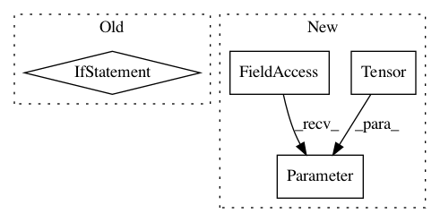

fc850582ced2b873507493a7a6eafd7bcc9a24e2,sru/sru_functional.py,tSRUCell,__init__,#tSRUCell#Any#Any#Any#Any#Any#Any#Any#,610
Before Change
n_out*4 if bidirectional else n_out*2
))
self.weight_c = nn.Parameter(torch.Tensor(
n_out*2 if bidirectional else n_out
))
self.bias = nn.Parameter(torch.Tensor(
n_out*2 if bidirectional else n_out
))
After Change
out_size*2
))
self.weight_c = nn.Parameter(torch.Tensor(out_size))
self.bias = nn.Parameter(torch.Tensor(out_size))
if layer_norm:
self.layer_norm = nn.LayerNorm(self.n_in)
else:
self.layer_norm = None
In pattern: SUPERPATTERN
Frequency: 3
Non-data size: 4
Instances
Project Name: asappresearch/sru
Commit Name: fc850582ced2b873507493a7a6eafd7bcc9a24e2
Time: 2019-09-11
Author: taolei@csail.mit.edu
File Name: sru/sru_functional.py
Class Name: tSRUCell
Method Name: __init__
Project Name: asappresearch/sru
Commit Name: 6acdbcfffa5674676dc88c94af3e555f3fa64d17
Time: 2019-10-22
Author: taolei@csail.mit.edu
File Name: sru/sru_functional.py
Class Name: tSRUCell
Method Name: __init__
Project Name: asappresearch/sru
Commit Name: ff242b2a949615a2939e7fbd2dc7b9b81d907aec
Time: 2017-09-08
Author: taolei@Taos-MacBook-Pro.local
File Name: cuda_functional.py
Class Name: SRU
Method Name: __init__